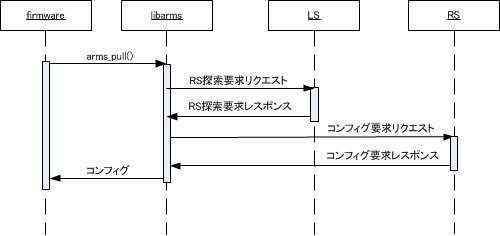

libarms の arms_pull() 関数を実行すると、コンフィグ取得動作を開始する。
サービスアダプタからLS に対してHTTPS 接続を行い、RS 接続情報を取得する。 通信はSSLによって暗号化されるほか、認証キー(LS-SA key) によって認証が行われる。
サービスアダプタからRS に対してHTTPS 接続を行い、設定情報を取得する。通信はSSL によって暗号化されるほか、 認証キー(RS-SA key) によって認証が行われる。
RS がLS に複数台(最大で5 台まで) 登録されている場合、Pull の冗長化動作が可能である。 この場合、Pull 動作は以下のようになる。
初回起動時の動作
LS から取得したRS アドレスのリストの先頭から常に接続を試みる。 失敗した場合、[RS1 台目] → [RS2 台目] → [RS3 台目] →... のように、順に接続先を変更する。
rs-solicitation とconfig-solcitation の切り替え
前回のconfig-solicitation 時にどのRS で成功したか覚えておき、 コンフィグ再取得要求(RS) によるconfig-solicitation 時はそのRS から接続を試みる。 コンフィグ再取得要求(LS) などにより rs-solicitation を実行するとRS 情報を再取得するため、 成功した情報はリセットされ、取得した RS アドレスのリストの先頭から常に接続を試みる。
再起動時の動作
接続に成功したサーバ情報は、libarms 内部ステート情報に保存される。 このため、 arms_dump_state() を使って保存した情報を arms_restore_state() を用いて読み込んだ場合、その後のコンフィグ取得動作時には以前成功したサーバから接続を試みることができる。
LS から取得したRS アドレスのリストに対する接続が全て失敗すると、 所定の間隔、回数(LS にて設定するパラメータ) でリトライを行う。 RS アドレスのリストが2 台で、リトライ回数が5 回だとすると、2 × 5 で、計10 回の接続を試みることになる。